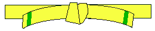
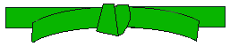
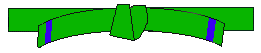
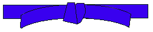
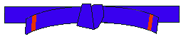

10th kup - Sajo Jirugi
White belt – Signifies innocence,that of the beginning student who has no previous knowledge of Tae Kwon-Do
Sajo Jirugi is the first exercise given to all Tae Kwon Do students to help develop co-ordination, direction changing, and breathing control. It is NOT a pattern.
9th kup – Chon-ji
Moves – 19
CHON-JI means literally the “Heaven and Earth”. It is, in the Orient, interpreted as the creation of the World, or the beginning of human history. Therefore it is the initial pattern played by the beginner.
This pattern consists of two similar parts – one to represent Heaven and the other the Earth.
8th kup – Dan Gun
Yellow belt – Signifies earth,from which a plant sprouts and takes root as the Tae Kwon-Do foundation is being laid
Moves – 21
DAN GUN is named after the Holy Dan Gun, the legendary founder of Korea in the year 2333 BC.
7th kup – Do San 
Moves – 24
DO SAN is the pseudonym of the patriot Ahn Ch’ang Ho (1876-1938) who devoted his life to furthering the education of Korea and it’s independent movement.
6th kup – Won Hyo 
Green belt – Signifies the plants growth as Tae Kwon-Do skills begin to develop
Moves – 28
WON HYO was the noted monk who introduced Buddhism during the Silla dynasty in the year 686 AD.
5th kup – Yul Gok 
Moves – 38
YUL GOK is the pseudonym of a great philosopher and scholar Yi I (1536-1584 AD) nicknamed “The Confucius of Korea”. The 38 movements refer to his birthplace on the 38 ° latitude and the diagram represents the scholar.
4th kup – Joon Gun 
Blue belt – Signifies the heavantowards which the plant matures into a towering tree As training in Tae Kwon-Do progresses
Moves – 32
JOON GUN is named after the patriot An Joong Gun who assassinated Hiro Bumi Ito, the Japanese governor of Korea, known as the man who played the leading part of the Korea–Japan merger. There are 32 movements in this pattern to represent Mr. An’s age when he was executed in the Lui-Shung prison (1910).
3rd kup – Toi-Gye 
Moves – 37
TOI-GYE is the penname of the noted scholar Yi Hwang (16 Century AD.), an authority on neo-Confucianism. The 37 movements of the pattern refer to his birthplace on the 37 ° latitude, and the diagram represents the scholar.
2nd kup – Hwa Rang
Red belt – Signifies danger,cautioning the student to exercise caution and the opponent to beware
Moves – 29
HWA RANG is named after the Hwa Rang Youth Group which originated in the Silla Dynasty about 600 AD. This group eventually became the actual driving force for the unification of the three Kingdoms of Korea. Hwa Rang means “Flowering Youth”, and comprises 29 movements which refer to the 29 th Infantry Division where Tae Kwon-Do developed into maturity.
1st kup – Choong-Moo
Black belt - Oppositeto White,signifying the maturity and proficiency in Tae Kwon-Do and also indicates the wearers imperviousness to darkness and fear.
Moves – 30
CHOONG-MOO was the given name of the great Admiral Yi Sun-Sin of the Yi Dynasty. In 1592 AD he is reputed to have invented the first armoured battleship (Kobukson) which was the precursor of the present day submarine. The reason this pattern ends with a left-hand attack is to symbolise his regrettable death, having no chance to show his full potential through the constraints of his loyalty to the King.
1st Dan – Ge-Baek
Moves – 44
GE BAEK is named after General Ge Baek who was in charge of the army at the end of the Bak Jai Dynasty in 660AD. The movement plan is intended to represent his strict military discipline. Ge Baek contains 44 movements.
1st Dan – Po Eun
Moves – 36
PO EUN is the pseudonym of a fifteenth century Korean poet and scientist named Chong Mong-chu. Chong is also revered as a great patriot, having penned the lines “I would not serve a second master though I might be crucified a hundred times”. The pattern denotes his unerring loyalty to king and country towards the end of the Koryo Dynasty, and consists of 36 movements.
1st Dan – Kwang Gae
Moves – 39
KWANG GAE refers to King Gwang Gae-T’o-wang, 19 th ruler of Korea’s Koguryo Dynasty. King Gwang Gae retook many of the territories lost by Korea to the Chinese Hwo Yun, including the greater part of Manchuria. The movement plan for the pattern represents this expansion and recovery of lost territory and the 39 movements denote his 39 year reign.